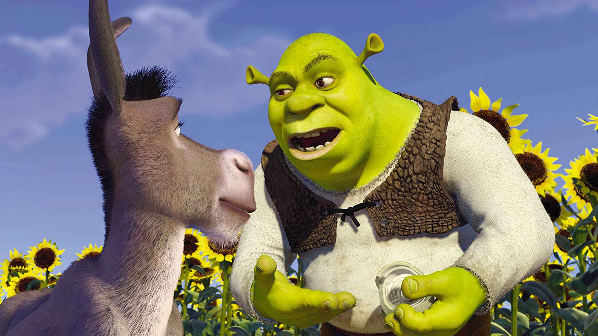

Shrek 2 es la exitosa secuela del clásico animado Shrek (2001). En esta historia, Shrek y Fiona viajan al Reino de Muy Muy Lejano para conocer a los padres de Fiona, quienes no están contentos con la nueva apariencia de su hija y su esposo. Con un humor irreverente, referencias a la cultura pop y una banda sonora inolvidable, Shrek 2 no solo superó a su predecesora en taquilla, sino que se consolidó como una de las mejores películas animadas de todos los tiempos.
⭐ Dato extra: Fue la película más taquillera de 2004 y una de las secuelas animadas más exitosas de la historia.